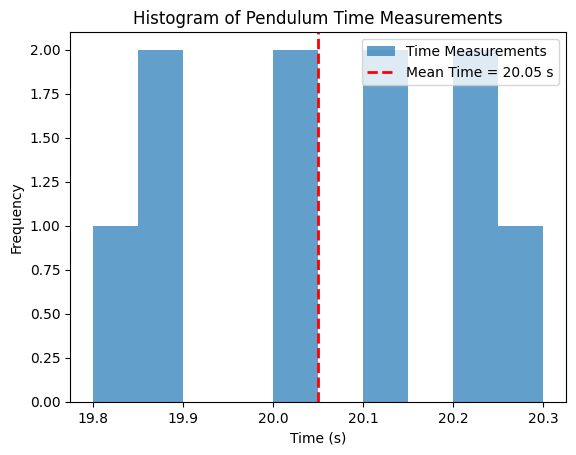

Problem 1
Problem 1: Measuring Earth's Gravitational Acceleration with a Pendulum
Motivation
The acceleration due to gravity \( g \) is a fundamental constant that governs motion under Earth's gravitational pull. It is crucial in physics, engineering, and astronomy. One of the simplest yet most effective methods to measure \( g \) is through the oscillations of a simple pendulum.
By analyzing the pendulum’s period, we can determine the local gravitational acceleration while also exploring the role of uncertainties in experimental measurements. This exercise highlights key concepts in precision, accuracy, and error analysis in experimental physics.
Procedure
1. Materials Required
- A string (1 to 1.5 meters long)
- A small weight (e.g., keychain, bag of sugar, coins)
- Stopwatch (or smartphone timer)
- Ruler or measuring tape
2. Experimental Setup
- Attach the weight to the string and suspend it from a fixed support.
- Measure the pendulum length \( L \) (from the suspension point to the center of mass of the weight) using a measuring tape.
- Estimate the uncertainty in length measurement:
[ \Delta L = \frac{\text{resolution of measuring tool}}{2} ]
3. Data Collection
- Pull the pendulum slightly (<15°) from its equilibrium position and release it gently.
- Measure the time for 10 full oscillations (\( T_{10} \)).
- Repeat this process 10 times and record the values.
- Calculate the mean time for 10 oscillations:
[ \bar{T}{10} = \frac{\sum T{10}}{10} ] - Compute the standard deviation (\( \sigma_T \)):
[ \sigma_T = \sqrt{\frac{\sum (T_{10} - \bar{T}_{10})^2}{9}} ] - Determine the uncertainty in the mean time:
[ \Delta T_{10} = \frac{\sigma_T}{\sqrt{10}} ]
4. Calculations
1. Calculate the Period (\( T \))
The period of one oscillation is:
[
T = \frac{T_{10}}{10}
]
The uncertainty in \( T \) is:
[
\Delta T = \frac{\Delta T_{10}}{10}
]
2. Compute \( g \) Using the Pendulum Formula
For a simple pendulum:
[
g = \frac{4\pi^2 L}{T^2}
]
3. Propagate Uncertainties
The uncertainty in \( g \) is determined by:
[
\frac{\Delta g}{g} = \sqrt{\left( \frac{\Delta L}{L} \right)^2 + \left( 2 \times \frac{\Delta T}{T} \right)^2}
]
Thus,
[
\Delta g = g \times \sqrt{\left( \frac{\Delta L}{L} \right)^2 + \left( 2 \times \frac{\Delta T}{T} \right)^2}
]

Analysis & Discussion
1. Comparison with the Standard Value
Compare your measured \( g \) with the standard value \( 9.81 \, m/s^2 \). If your result deviates significantly, discuss possible sources of error.
2. Sources of Uncertainty
- Measurement precision:
- Uncertainty in length (\( \Delta L \)) depends on the measuring tape’s resolution.
-
Uncertainty in timing (\( \Delta T \)) depends on reaction time using a stopwatch.
-
Variability in timing:
- Human error in starting/stopping the stopwatch.
-
Small variations in pendulum release angle.
-
Assumptions & Experimental Limitations:
- Air resistance and friction at the pivot affect the motion.
- The assumption that the pendulum follows simple harmonic motion is only valid for small angles.
Deliverables
1. Tabulated Data (in Markdown format)
| Trial | \( L \) (m) | \( T_{10} \) (s) | \( T \) (s) | \( g \) (m/s²) |
|---|---|---|---|---|
| 1 | X.XX | XX.XX | X.XX | X.XX |
| 2 | X.XX | XX.XX | X.XX | X.XX |
| ... | ... | ... | ... | ... |
| 10 | X.XX | XX.XX | X.XX | X.XX |
2. Uncertainty Analysis
- \( \bar{T}_{10} = \) …
- \( \sigma_T = \) …
- \( \Delta T_{10} = \) …
- \( \Delta L = \) …
- \( g = \) …
- \( \Delta g = \) …
3. Discussion
- Comparison with \( 9.81 \, m/s^2 \)
- Major sources of error & uncertainty
- Suggestions for improvement:
- Using a photogate timer instead of a manual stopwatch.
- Conducting the experiment in a low air resistance environment.
- Ensuring the pendulum swings in a single plane.
Conclusion
This experiment provides a practical method for estimating Earth's gravitational acceleration while reinforcing concepts of uncertainty and experimental accuracy. By analyzing errors and improving measurement techniques, students gain insight into the importance of precision in scientific experiments.